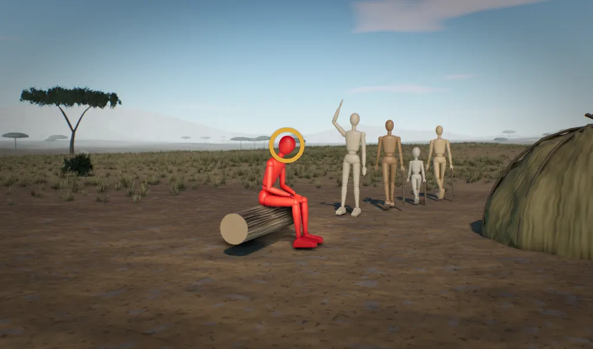

From the article

“One in four teenagers worldwide is not active on any day of the week and girls are falling furthest behind, a major new study finds.”
“Researchers counted an active day as one on which an adolescent reported at least 60 minutes of moderate-to-vigorous physical activity, as recommended by the World Health Organization (WHO)”
“The most active adolescents were in Finland, Canada and Serbia, averaging 4.5 to 4.8 active days per week”
“Governments need to act faster, they suggest, with policies tailored to local contexts that reach the whole population and prioritise the least active adolescents”the study authors
Read the article on Euronews, 4 Nov 2026
The evolutionary angle: Teens who don't exercise
A teenager in 2026 can see every friend, have fun and eat dinner without taking a step. The body is built to stay alive and have children, and it never spends energy on a step that buys nothing.
Source: Teens aren't getting enough exercise and the problem has barely changed in 15 years, Euronews, 4 Nov 2026
The mismatch
Fifteen years of a WHO target moved the global average nowhere: 2.7 active days a week in 2010 and in 2025. Even the best countries, Finland, Canada and Serbia, reach only 4.5 to 4.8 days, far below a camp where moving fed you every day. No country or region is on track for the target, because what the body used to walk for now sits indoors.
For most of human history eating meant walking somewhere: adults covered roughly 9 to 15 km a day getting food, water and firewood, and even young children gathered a good share of their own food. Moving was how you got fed, and between trips people rested a lot. A camp child spent the day on foot in a self-run mixed-age group, with no timetable. A 2026 teen gets friends and food through a phone, sits through a school day adults timetabled, and rides to class on a route adults picked. The sum is simple: staying in costs nothing today, and the 60 minutes on offer buys a health promise decades away, so the body keeps the energy.
Girls fall furthest behind as they get older, averaging 2.4 active days against three for boys. In forager bands children's play gave way to food-getting work as they grew, mostly in mixed groups of boys and girls. Adolescence was when hard skills like hunting got taught. Now childhood play ends and nothing that moves replaces it, for girls and boys alike.
 Today
Today
What the brain seesWhat her body looks for: friends heading out, somewhere real to go.
The claims
- 1
Teens sit because nothing they want needs a walk anymore.
Cor says For most of human history food had to be walked to, dug and carried home, so moving always bought something.
- 2
The body only spends energy on movement that gets it something today.
Cor says Humans are built to rest a lot, and foragers rested about as many hours a day as office workers.
- tested many timesE197 Lieberman 2021
- tested onceE289 Raichlen et al. 2020
- argued, not yet testedE288 Raichlen et al. 2020
- 3
A 60-minute exercise target asks a teenager's body to move for nothing.
Cor says For most of human history nobody exercised, because movement came with getting food and moving camp.
- tested many timesEEA-SUBS-01 Daily incidental movement load
- argued, not yet testedE198 Lieberman 2021 E199 Lieberman 2021
- 4
Even the most active countries average under five active days a week.
Cor says For most of human history people walked because the walk got them fed, and a cycling route feeds nobody.
- tested many timesEEA-DIET-03 Acquisition effort (calories are physically worked for)
- 5
Growing up hands teens nothing that moves, and girls drop off fastest.
Cor says In forager camps, children's play gave way to food-getting work as they grew, so growing up still meant moving.
- tested onceE753 Boyette 2016 E787 Crittenden et al. 2013
- contestedE716 Lew-Levy et al. 2017
How strongtested many timestested onceseen in animalsargued, not yet testedcontested